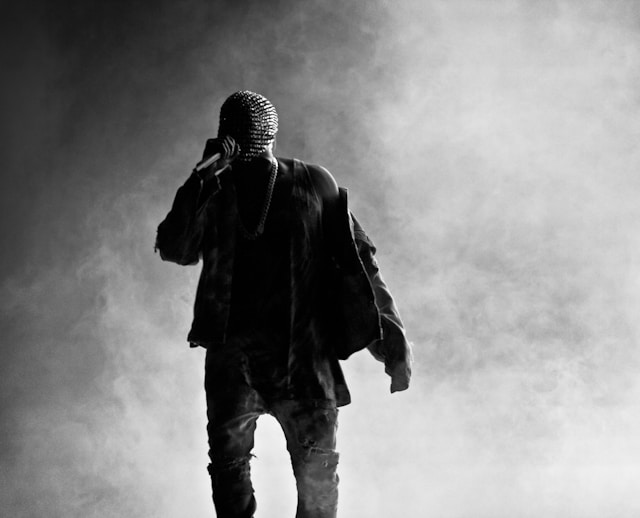

Kanye West
Kanye West, född 8 juni 1977, är en amerikansk rappare, sångare, låtskrivare, skivproducent och modedesigner. Han har haft stor inverkan på modern musik och populärkultur.
West började sin karriär som producent för Roc-A-Fella Records och blev känd för sitt arbete på Jay-Zs album "The Blueprint". Han debuterade som soloartist med albumet "The College Dropout" år 2004.
Förutom sin musikaliska karriär är West också känd för sin modedesign och sina kontroversiella uttalanden i media. Han har släppt flera framgångsrika album och vunnit många priser under sin karriär.